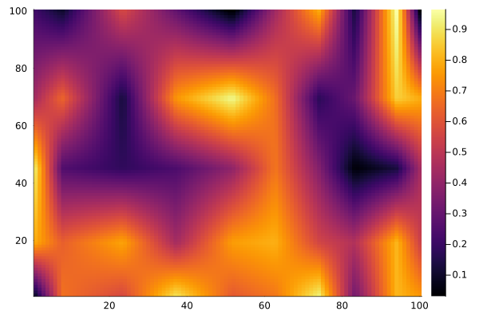
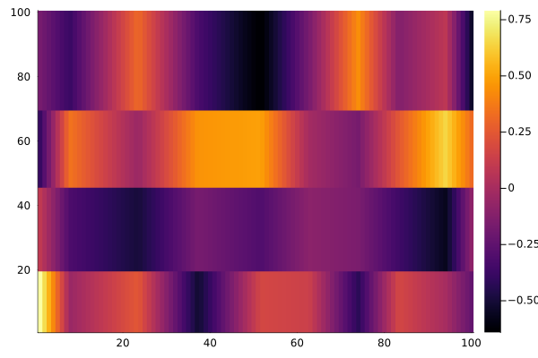
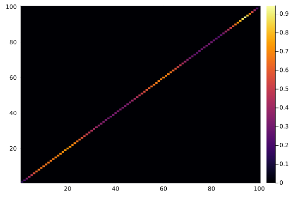

using NDInterpolations
using Random
Random.seed!(1)
interp_dims = (
LinearInterpolationDimension(cumsum(0.5 .+ rand(5))),
LinearInterpolationDimension(cumsum(0.5 .+ rand(10)))
)
t_eval_1 = range(
first(interp_dims[1].t),
last(interp_dims[1].t),
length = 100
)
t_eval_2 = range(
first(interp_dims[2].t),
last(interp_dims[2].t),
length = 100
)
1.2675180540873912:0.08653425606861634:9.83440940488041
using Plots
u = rand(5, 10)
itp = NDInterpolation(interp_dims, u)
out = itp.(t_eval_1, t_eval_2')
heatmap(out)
u = reshape(u, 5, 10, 1)
itp = NDInterpolation(interp_dims, u)
out = itp.(t_eval_1, t_eval_2')
heatmap(map(only, out))
out = zeros(100, 100)
for I in CartesianIndices(out)
i, j = Tuple(I)
itp(view(out, i, j:j), t_eval_1[i], t_eval_2[j])
end
heatmap(out)
using ForwardDiff
u = reshape(u, 5, 10)
itp = NDInterpolation(interp_dims, u)
∂₁itp = (t1, t2) -> ForwardDiff.derivative(t_ -> itp(t_, t2), t1)
out = ∂₁itp.(t_eval_1, t_eval_2')
heatmap(out)
out = itp.(t_eval_1, t_eval_2'; derivative_orders = (1,0))
heatmap(out)
using LinearAlgebra
interp_dims = (
LinearInterpolationDimension(interp_dims[1].t; t_eval = t_eval_1),
LinearInterpolationDimension(interp_dims[2].t; t_eval = t_eval_2)
)
itp = NDInterpolation(interp_dims, u)
out = eval_unstructured(itp)
heatmap(diagm(out))
u = reshape(u, 5, 10, 1)
itp = NDInterpolation(interp_dims, u)
out = zeros(100, 100, 1)
eval_grid!(out, itp)
heatmap(out[:,:,1])